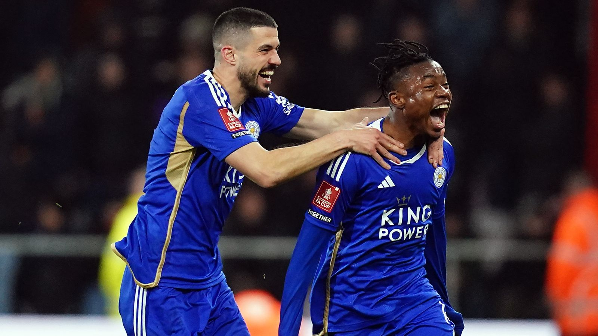
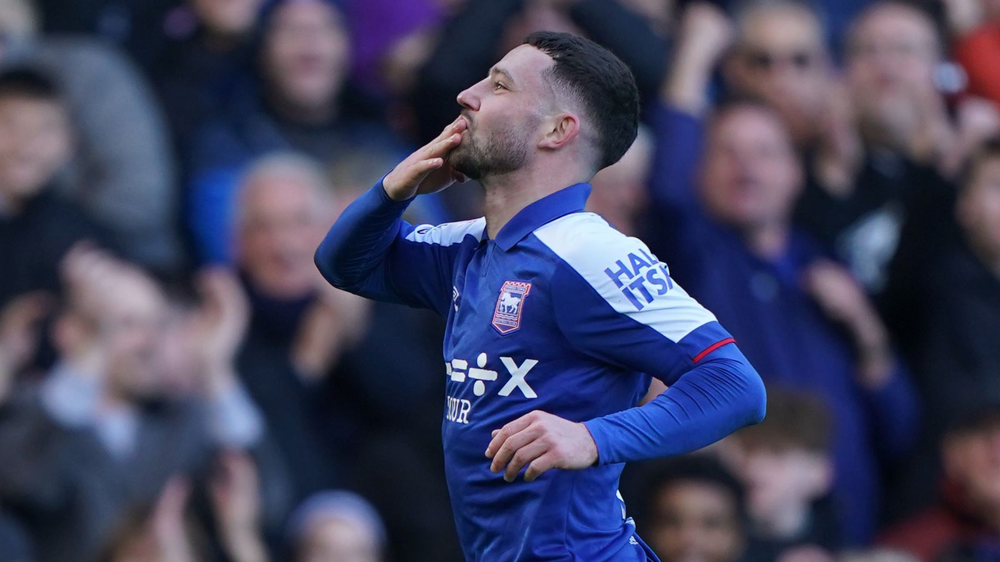

Championship 2023/24: Leicester, Leeds, Ipswich, Southampton in four-way automatic promotion battle
Leicester City, Leeds United, Ipswich Town and Southampton all still in race for two automatic-promotion places; watch every Sky Bet Championship midweek match across Sky Sports on Wednesday
.jpg)
1st - Leicester, 81 points

Leicester looked as though they were champions-elect for much of the season and, until very recently, were on course to smash Reading's record of 106 points in a single Championship season.
The wind has dropped from their sails over the last few weeks but they edged Sunderland 1-0 on Tuesday to end a run of three straight defeats.
2nd - Ipswich, 78 points

Given Ipswich were only promoted from League One last summer, a rough patch was always on the cards and it came over a two-month period between December and February, when they won just once in nine games.
Trending
Fury confronts Ngannou over 'coward' claim after arriving in Saudi Arabia
Transfer Centre LIVE! Man Utd target Tel to sign new Bayern deal
Coefficient conundrum: How Kane could deny Spurs CL spot
Salah back in Liverpool training ahead of Man City game
Papers: Brighton demand £12m for De Zerbi amid Liverpool links
Merson Says: Liverpool will beat Man City if Salah plays
Race for Premier League: Who's in mix for promotion?
The AJ show goes on! Is the best yet to come?
Joshua vs Ngannou: All you need to know ahead of Friday's fight
Will Man Utd stick or twist with Ten Hag?
Watch
Latest News
They are, without a doubt, over that hill now and back within three points of the leaders after recording six wins on the bounce.